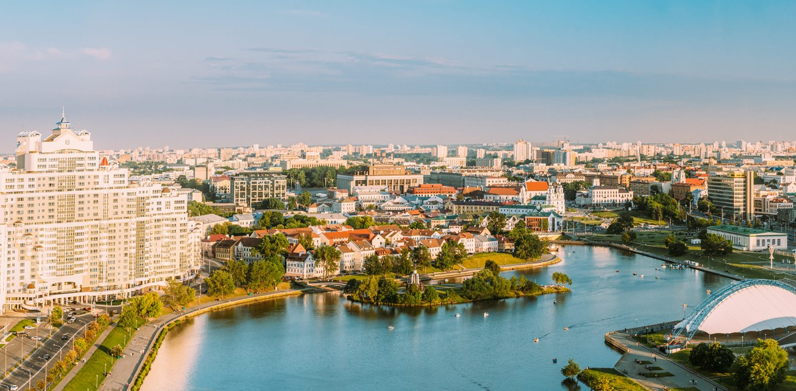
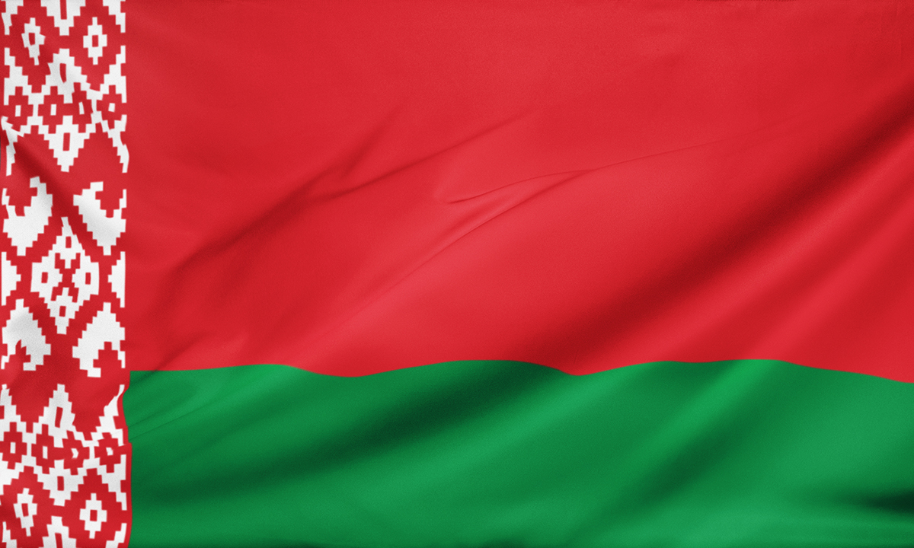
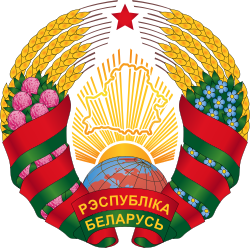
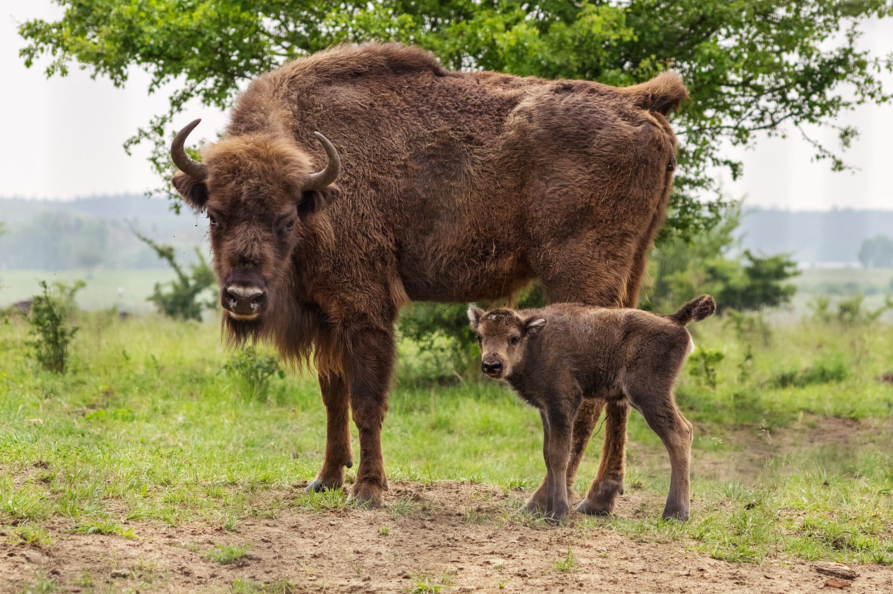
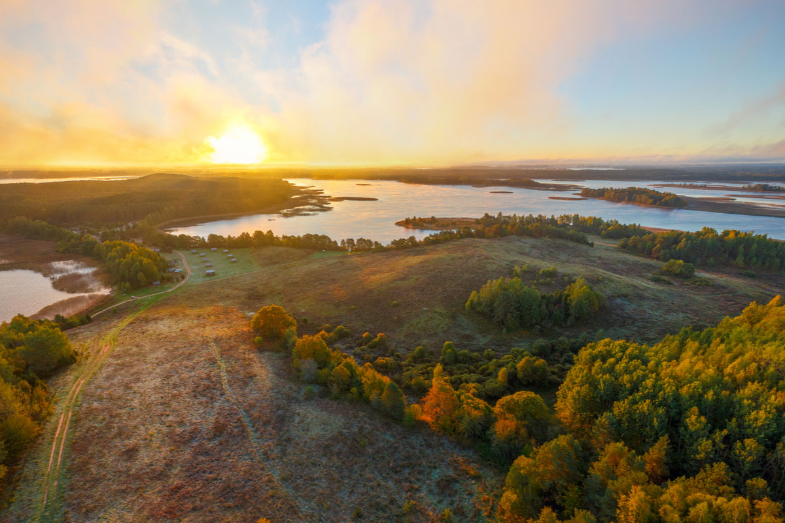
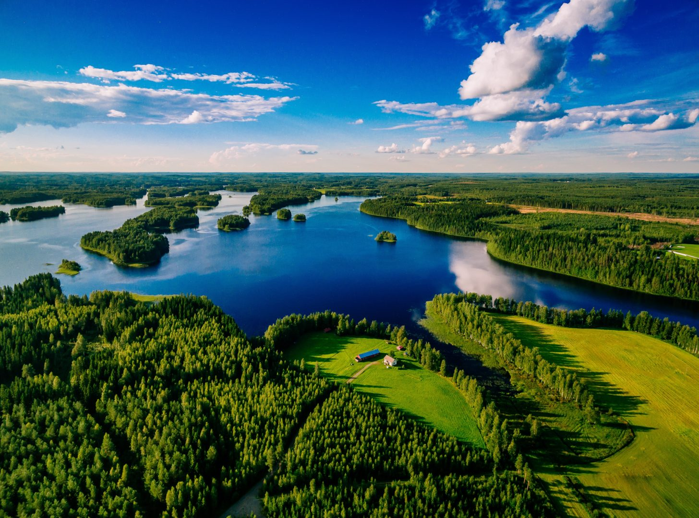
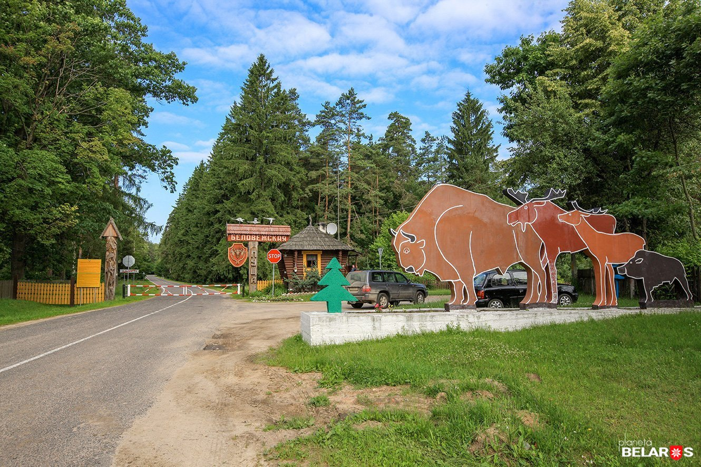
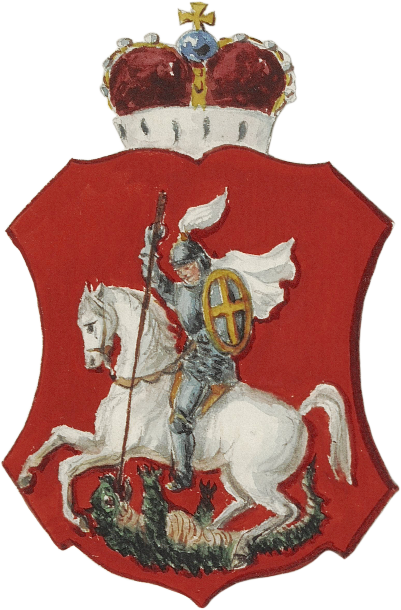

Belarus is a landlocked country in Eastern Europe. Its capital city is Minsk. The government of Belarus is a presidential republic. The country is divided into regions, and each region has its own local government.
The population of Belarus is about 9.2 million people. The official languages are Belarusian and Russian.
Every country has its own symbols. The national flag of Belarus has two stripes: a wide red row on the top and a narrower green one at the bottom. There is also a white ornamental pattern on the left side.
The national emblem of Belarus is a special symbol. It has a red and green outline, a map of the country, and golden rays of the sun. You can also see ears of wheat and a red star.
Belarus has beautiful nature, and some plants and animals are its symbols too. The cornflower is the national flower. The white stork is the national bird. And the European bison is the national animal. This is a very big and strong animal. It is the largest animal in Europe!
Belarus is a country with very diverse landscapes. It is mostly flat. There are no mountains, but there are some hills and highlands in the center of the country. There are also large lowlands and plains.
Belarus is famous for its many lakes and rivers. You won't chase boredom here if you love nature! The land is not all the same. For example, you can find moorlands in the south, which are wet, grassy areas. Beautiful valleys and straths (a Scottish word for a wide river valley) surround the rivers.
A popular river: The Dnieper River is one of the major rivers in Europe. It starts in Russia and flows through Belarus to Ukraine.
A popular lake: Lake Narach is the largest lake in Belarus. It is a very popular place for tourists in summer.
A very popular place to visit in Belarus is the Belovezhskaya Pushcha. It is an ancient forest and a UNESCO World Heritage site. This is the home of the European bison.
A famous national thing is the "Pahonia" (The Chase). It is a historical national emblem of Belarus, which shows a knight on a horse. The knight is ready to chase an enemy.
